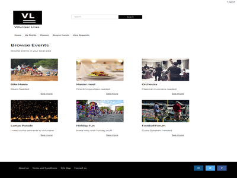

Volunteer Lines Project
Overview
This project was carried out as my final year project at University. The project aim was to design and develop an event planning and management platform that allowed prospective event planners to create and manage their own event without the help of an event planner. Some functionality includes hiring volunteers to help at events they are interested in. This would work in the form of requests where the admin user can send a request to a volunteer and vice versa. This was a simple concept that aimed to reduce the cost for event managers that wanted to host a professional event as this website aimed to provide a professional service without a high admin cost. This was because people would plan their own events and control everything. The build consisted of HTML, CSS, JavaScript & PHP.
The Approach
The project took a structured approach to help achieve its aims with the whole project lasting around 9 months. An agile methodology was used to help the project transition through the stages at a managed pace. The steps taken included some initial user research, sketches, user journey flow diagrams, wireframes, prototyping and user testing. A more detailed explanation of these steps can be found in the following writing below.
Design Process
The design process ran using an iteration cycle that can be seen depicted in the corresponding diagram. This was important for the project to ensure that each stage had the same amount of time spent on them really focusing on how each design could work for the end user.
This cycle is continuous in motion as the project has completed one cycle it should go around again to focus on any other problems that may have arisen during user testing. Doing this should always improve a user journey as more is learnt about who the users are, their needs and end goals.
The design process ran using an iteration cycle that can be seen depicted in the corresponding diagram. This was important for the project to ensure that each stage had the same amount of time spent on them really focusing on how each design could work for the end user.
This cycle is continuous in motion as the project has completed one cycle it should go around again to focus on any other problems that may have arisen during user testing. Doing this should always improve a user journey as more is learnt about who the users are, their needs and end goals.
{kind=link}
User Persona
One of the main design outputs from user research was a user persona. This is an important first step in the research because it enables the designer to really understand who their potential users might be.
The example used in this project was constructed based upon a combination of discussions that took place with people that could potentially use the end product and with other research which was formed as part of a literature review.
The corresponding image shows a rough sketch of what the persona may look like and the information it may include. Click the link below to see the finished persona.
One of the main design outputs from user research was a user persona. This is an important first step in the research because it enables the designer to really understand who their potential users might be.
The example used in this project was constructed based upon a combination of discussions that took place with people that could potentially use the end product and with other research which was formed as part of a literature review.
The corresponding image shows a rough sketch of what the persona may look like and the information it may include. Click the link below to see the finished persona.
View example persona{kind=link}
Sketches
The next stage was to sketch out some initial ideas of what the screens may look like. This was carried out after the initial user research had been completed with the focus switching to designing screens and potential journeys to suit the potential audience.
The corresponding image shows an example of the type of thing sketched. The process I followed was to create a quick paper prototype this helped to visualise some journeys I had in mind also exploring what content could appear.
If the project had more time it could be potentially useful to test an initial paper prototype with users to gather early feedback but in this instance that was not an available option.
The next stage was to sketch out some initial ideas of what the screens may look like. This was carried out after the initial user research had been completed with the focus switching to designing screens and potential journeys to suit the potential audience.
The corresponding image shows an example of the type of thing sketched. The process I followed was to create a quick paper prototype this helped to visualise some journeys I had in mind also exploring what content could appear.
If the project had more time it could be potentially useful to test an initial paper prototype with users to gather early feedback but in this instance that was not an available option.
{kind=link}
User Journey Flow Diagrams
The next stage was to start officially planning out journeys which I did by creating user journey flow diagrams. This is another important step as journeys that will be used by users are first created here.
The corresponding image shows an example diagram which is depicting the login journey. All the diagrams created were made in the same way using the FlowMapp tool.
This helped to plan out journeys thinking about the logic of the system along with logical steps a user would take in order to complete the given task. Once this stage is completed it makes the stages after easier to complete.
The next stage was to start officially planning out journeys which I did by creating user journey flow diagrams. This is another important step as journeys that will be used by users are first created here.
The corresponding image shows an example diagram which is depicting the login journey. All the diagrams created were made in the same way using the FlowMapp tool.
This helped to plan out journeys thinking about the logic of the system along with logical steps a user would take in order to complete the given task. Once this stage is completed it makes the stages after easier to complete.

Wireframes
The next stage was to start creating wireframes. This builds directly on from the user journey flow diagrams as journeys can start to be made visual bringing them to life. The sketching stage also feeds into the wireframes as ideas from initial sketches can be used for inspiration to get the process going.
The corresponding image shows an example wireframe that was created which was done using Axure. This tool helped to make journeys visual which also allowed for some initial content to be added to the designs.
The wireframes were made interactive which ended up simulating a rough prototype. This was helpful as again it helped to see what the pages may look like and get a feel for the journeys that had been created.
The next stage was to start creating wireframes. This builds directly on from the user journey flow diagrams as journeys can start to be made visual bringing them to life. The sketching stage also feeds into the wireframes as ideas from initial sketches can be used for inspiration to get the process going.
The corresponding image shows an example wireframe that was created which was done using Axure. This tool helped to make journeys visual which also allowed for some initial content to be added to the designs.
The wireframes were made interactive which ended up simulating a rough prototype. This was helpful as again it helped to see what the pages may look like and get a feel for the journeys that had been created.
{kind=link}
Prototype
The next stage was to build the wireframes into a coded prototype. This is another important stage as it builds together all the design work done so far into a finished product that a user could use. The prototype was built using HTML, CSS, PHP and JavaScript.
The corresponding image shows an example of a page that has been prototyped. Here the pages look a lot more life like and is typically the last stage before user testing. Before the pages can be user tested, they were tested using Blackbox and Whitebox testing techniques. This was mainly done to test that links and buttons worked correctly also testing user journeys to make sure they behave as intended. Once this was done it was time to test with real users.
{kind=link}
The next stage was to build the wireframes into a coded prototype. This is another important stage as it builds together all the design work done so far into a finished product that a user could use. The prototype was built using HTML, CSS, PHP and JavaScript.
The corresponding image shows an example of a page that has been prototyped. Here the pages look a lot more life like and is typically the last stage before user testing. Before the pages can be user tested, they were tested using Blackbox and Whitebox testing techniques. This was mainly done to test that links and buttons worked correctly also testing user journeys to make sure they behave as intended. Once this was done it was time to test with real users.
User Testing
The final stage in the process was to user test with real users. The finished prototype was tested with 5 real users who could potentially use the site if it went live. The process involved giving each user a questionnaire to complete. This focussed on gathering some initial details about them which could be used as part of the results later. This was optional with users able to omit if they wished.
After this the user was faced with a series of tasks in which they would start on a specific page and navigate around the prototype on their own until the tasks are completed. At the end of the test users were presented with another questionnaire to gather some more information about how they found the overall experience which again could be used when iterating.
The tests were all done in the same conditions with a screen recording being done capturing what each user was doing on screen. After all the user testing had been completed a detailed analysis took place looking at the video footage of user’s actions along with the questionnaire feedback. The success was recorded on the metric of users doing a task correctly with failure being when a task is not completed properly.
The end analysis was written up in a report which detailed the success, failures, interesting points and trends of users. This feedback is very important as it can be used to change specific user journeys or any other aspects that need iterating to make the overall experience better for the end user.